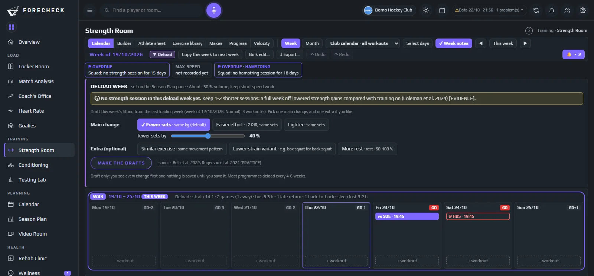
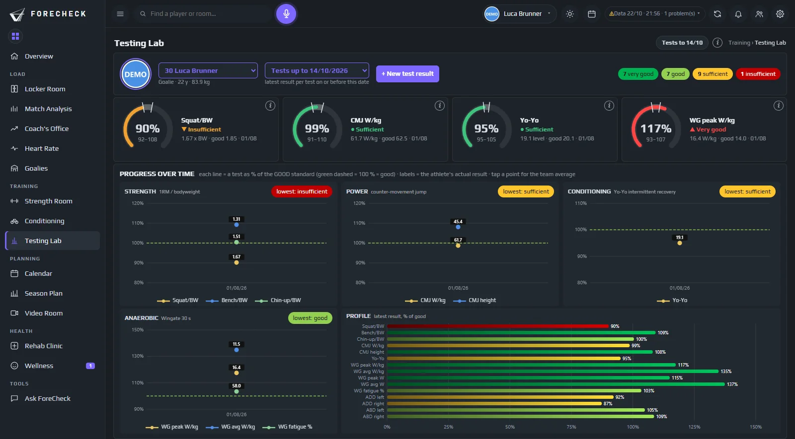

Strength Room · Testing Lab
Des programmes qui suivent l’athlète.

Nouveau cette saison
Testing Lab
iEn savoir plus
Chaque test, chaque joueur, face à la norme et à son propre historique.

Strength Room
Écrivez la semaine une fois, chaque joueur reçoit ses kilos
iEn savoir plus
Construisez une séance pour l’équipe, un groupe de postes ou un joueur, avec des blocs et des supersets. Les pourcentages et le RPE se convertissent en kilos à partir des derniers maximums de chaque joueur.
Bibliothèque d’exercices
- Back squat
- Bench press
- Trap-bar deadlift
- Hip thrust
- Nordic curl
- Copenhagen plank
- Pull-up
- Landmine press
Testing Lab
Des tests physiques qui veulent dire quelque chose
iEn savoir plus
Tests de saut, de sprint, de force et de hanches dans un profil par joueur, évalués par rapport à l’équipe, à des seuils clairs et à l’historique du joueur.
Force des hanches · N/kg
| ADD | ABD | ADD:ABD | |
|---|---|---|---|
| #5 D | 6.9 | 6.0 | ok |
| #14 F | 5.4 | 5.2 | warn |
| #27 F | 6.4 | 5.9 | ok |
| #44 D | 7.2 | 5.8 | warn |
Connecté
Les tests alimentent le programme
iEn savoir plus
Un nouveau résultat de test met à jour les maximums derrière chaque séance : le programme suit l’athlète, pas les chiffres de l’été dernier.
Saut en contre-mouvement · #27 F
Les questions auxquelles il répond
Ce que vous décidez avec
- Que soulève chaque joueur cette semaine ?
- Qui progresse et qui décroche ?
- L’équilibre adducteurs-abducteurs est-il où il devrait être ?
- Quels maximums ne sont plus à jour ?